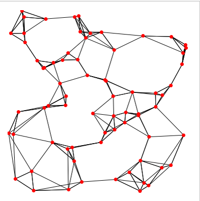
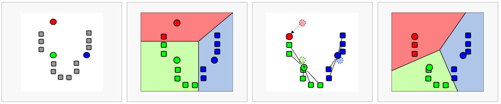
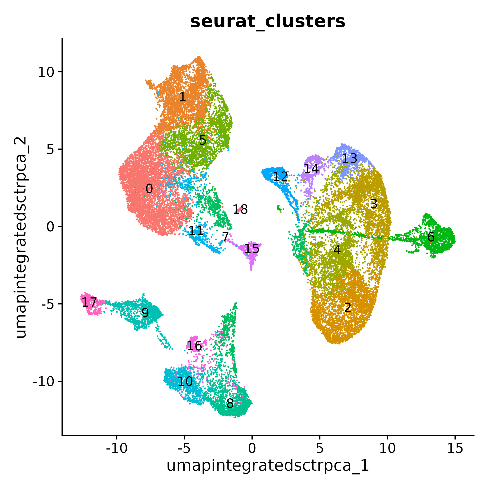
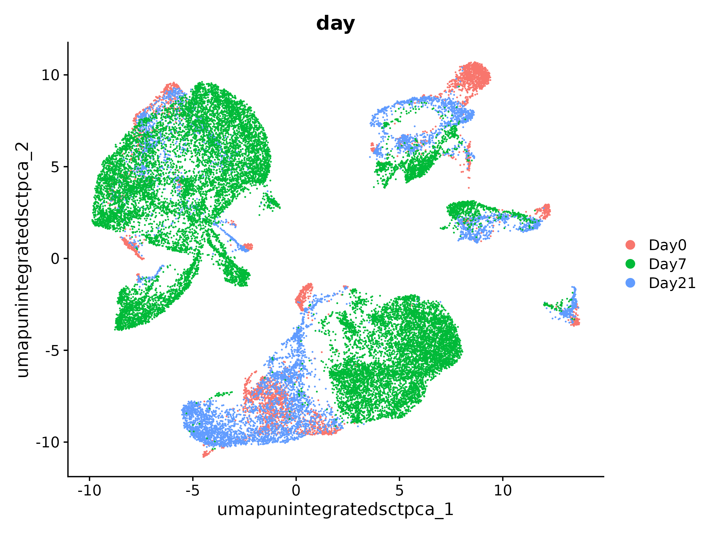

Workflow Overview

Introduction
One of our goals in a single-cell analysis is to generate clusters
that reasonably approximate cell-types or sub-types of interest in our
samples before determining if there are differences in the proportions
of these populations or differences in gene expression within these
populations between experimental conditions.
In this section, we will demonstrate how to generate clusters using
Seurat’s graph based clustering approach and visualize those clustering
assignments via a lower-dimensional projection of the full dataset.
Like other steps in our analysis, multiple parameters may need to be
tested and evaluated while we would expect that only the final would be
reported. Clustering is considered part of data exploration so an
iterative approach is reasonable, and often expected (source).
Objectives
- Understand the clustering process and input parameters
- Generate initial clusters and visualize the results
Clustering and projection
An important aspect of parameter selection for clustering is to
understand the “resolution” of the underlying biology and your
experimental design. Is answering your biological question dependent on
identifying rarer cell types or specific subtypes? Or are broader
cell-types more relevant to address your biological question?
The OSCA book has a helpful
analogy comparing clustering to microscopy and points out that
“asking for an unqualified ‘best’ clustering is akin to asking for the
best magnification on a microscope without any context”.
We’ve already selected a number of PCs that we think are likely to
represent biological variation in our data while excluding technical
variability. Next, we’ll need to determine the “community” of cells
based on the selected PCs before selecting a resolution to divide those
communities into discrete clusters.
Clustering
Seurat uses a graph-based clustering approach to assign cells to
clusters using a distance metric based on the previously generated PCs,
with improvements based on work by (Xu
and Su 2015) and CyTOF data (Levine et
al. 2015) implemented in Seurat v3 and v5 and building on the
initial strategies for droplet-based single-cell technology (Macosko et
al. 2015) (source).
A key aspect of this process is that while the clusters are based on
similarity of expression between the cells, the clustering is based on
the selected PCs and therefore limited to the genes contributing to
those PCs.

Image: kNN example - section on graph based
clustering (from Cambridge Bioinformatics course)
To briefly summarize, cells are embedded in a k-nearest neighbors
(kNN) graph (illustrated above) based on “the euclidean distance in PCA
space” between the cells and the edge weights between any two cells
(e.g. their “closeness”) is refined based on Jaccard similarity (source).
Additional context and sources for graph-based clustering
Cambridge
Bioinformatics’ Analysis of single cell RNA-seq data course
materials, the source of the image above, delves into kNN and other
graph based clustering methods in much greater detail, including
outlining possible downsides for these methods. To described kNN, we
have also drawn from the Ho
Lab’s description of this process for Seurat v3 as well as the HBC
materials on clustering and the OSCA
book’s more general overview of graph based clustering, which also
describes the drawbacks for these methods.
This process is performed with the FindNeighbors() command,
using the number of principal components we selected in the previous
section.
geo_so = FindNeighbors(geo_so, dims = 1:pcs, reduction = 'integrated.sct.rpca')
The second step is to iteratively partition the kNN graph into
“cliques” or clusters using the Louvain modularity optimization
algorithm (for the default parameters), with the “granularity” of the
clusters set by a resolution parameter (source).

Image: K-means clustering example (from
Cambridge Bioinformatics course)
We’ll use the FindClusters() function,
selecting a resolution of 0.4 to start, although we could
also add other resolutions at this stage to look at in later steps. See
Waltman
and Jan van Eck (2013) for the underlying algorithms.
Again, how a “cell type” or “subtype” should be defined for your data
is helpful to consider in selecting a resolution - we’d start with a
higher resolution for smaller/more rare clusters and a lower resolution
for larger/more general clusters.
And then iff we look at the meta data we can see that cluster labels
have now been added for each cell:
# generate clusters
geo_so = FindClusters(geo_so, resolution = 0.4, cluster.name = 'integrated.sct.rpca.clusters')
# look at meta.data to see cluster labels
head(geo_so@meta.data)
Generally it’s preferable to err on the side of too many clusters, as
they can be combined manually in later steps. In our experience, this is
another parameter that may need to be iteratively revised and
reviewed.
Resolution parameter recommendations
The Seurat
clustering tutorial recommends selecting a resolution between 0.4 -
1.2 for datasets of approximately 3k cells, while the HBC
course recommends 0.4-1.4 for 3k-5k cells. However, in our
experience reasonable starting resolutions can be very dataset
dependent.
orig.ident nCount_RNA nFeature_RNA day replicate percent.mt nCount_SCT nFeature_SCT integrated.sct.rpca.clusters seurat_clusters
HODay0replicate1_AAACCTGAGAGAACAG-1 HO.Day0.replicate1 10234 3226 Day0 replicate1 1.240962 6061 2865 1 1
HODay0replicate1_AAACCTGGTCATGCAT-1 HO.Day0.replicate1 3158 1499 Day0 replicate1 7.536415 4625 1510 1 1
HODay0replicate1_AAACCTGTCAGAGCTT-1 HO.Day0.replicate1 13464 4102 Day0 replicate1 3.112002 5426 2485 5 5
HODay0replicate1_AAACGGGAGGCCCGTT-1 HO.Day0.replicate1 1189 629 Day0 replicate1 3.700589 4165 919 1 1
HODay0replicate1_AAACGGGCAACTGGCC-1 HO.Day0.replicate1 7726 2602 Day0 replicate1 2.938131 5858 2585 1 1
HODay0replicate1_AAACGGGGTCCGAATT-1 HO.Day0.replicate1 5165 2362 Day0 replicate1 9.196515 5162 2348 8 8
Cluster plots
To visualize the cell clusters, we can use dimensionality reduction
techniques to visualize and explore our large, high-dimensional dataset.
Two popular methods that are supported by Seurat are t-distributed
stochastic neighbor embedding (t-SNE) and Uniform Manifold Approximation
and Projection (UMAP) techniques. These techniques allow us to visualize
our high-dimensional single-cell data in 2D space and see if cells
grouped together within graph-based clusters co-localize in these
representations (source).
While we unfortunately don’t have time to compare and contrast tSNE,
and UMAP, we would highly recommend this blog post
contrasting tSNE and UMAP for illustrative examples. The Seurat
authors additionally caution that while these methods are useful for
data exploration, to avoid drawing biological conclusions solely based
on these visualizations (source).
To start this process, we’ll use the RunUMAP() function to
calculate the UMAP reduction for our data. Notice how the previous
dimensionality choices carry through the downstream analysis and that
the number of PCs selected in the previous steps are included as an
argument.
geo_so = RunUMAP(geo_so, dims = 1:pcs, reduction = 'integrated.sct.pca', reduction.name = 'umap.integrated.sct.pca')
geo_so
An object of class Seurat
47037 features across 29615 samples within 2 assays
Active assay: SCT (20548 features, 3000 variable features)
3 layers present: counts, data, scale.data
1 other assay present: RNA
3 dimensional reductions calculated: unintegrated.sct.pca, integrated.sct.rpca, umap.integrated.sct.rpca
Notice that we now have a third reduction:
umap.integrated.sct.rpca.
Visualizing and evaluating clustering
After we generate the UMAP reduction, we can then visualize the
results using the DimPlot() function,
labeling our plot by the auto generated seurat_clusters
that correspond to the most recent clustering results generated.
At this stage, we want to determine if the clusters look fairly well
separated, if they seem to correspond to how cells are grouped in the
UMAP, and if the number of clusters are aligned with the resolution of
our biological question.
We can also look at the same UMAP labeled by day to
visually inspect if the UMAP structure corresponds to the
day.
# UMAP with cluster ID labels
post_integration_umap_plot_clusters = DimPlot(geo_so, group.by = 'seurat_clusters', label = FALSE, reduction = 'umap.integrated.sct.rpca')
ggsave(filename = 'results/figures/umap_integrated_sct_clusters.png', plot = post_integration_umap_plot_clusters, width = 8, height = 6, units = 'in')
# UMAP with day labels (note - we added this column to the meta-data yesterday)
post_integration_umap_plot_day = DimPlot(geo_so, group.by = 'day', label = FALSE, reduction = 'umap.integrated.sct.rpca')
ggsave(filename = 'results/figures/umap_integrated_sct_day.png', plot = post_integration_umap_plot_day)

A plot like this can tell us if technical sources of variation might
be driving or stratifying the clusters, or if we see good correction
after the normalization and integration steps.
Another approach is to evaluate the number of cells per cluster using
the table() function, split by day or split by
orig.ident to see if the individual samples are driving any
of the UMAP structure:
# table of number of cells per cluster, split by condition
table(geo_so@meta.data$day, geo_so@meta.data$integrated.sct.rpca.clusters)
# table of number of cells per cluster per sample
table(geo_so@meta.data$orig.ident, geo_so@meta.data$integrated.sct.rpca.clusters)
0 1 2 3 4 5 6 7 8 9 10 11 12 13 14 15 16 17 18
Day0 88 938 239 167 38 242 36 94 814 132 119 298 55 29 159 133 57 141 19
Day7 3434 1138 2507 2022 2409 1330 1594 935 119 546 562 325 626 659 309 98 262 88 36
Day21 1438 1138 368 463 141 482 81 430 402 500 375 201 108 69 42 256 117 195 12
0 1 2 3 4 5 6 7 8 9 10 11 12 13 14 15 16 17 18
HO.Day0.replicate1 20 278 82 52 17 69 15 18 209 33 32 82 17 11 47 20 5 35 7
HO.Day0.replicate2 13 127 37 33 5 23 6 24 162 27 20 56 8 6 13 25 13 16 1
HO.Day0.replicate3 34 331 72 46 3 91 5 18 238 40 38 84 16 5 58 40 16 54 2
HO.Day0.replicate4 21 202 48 36 13 59 10 34 205 32 29 76 14 7 41 48 23 36 9
HO.Day7.replicate1 472 309 590 501 769 358 755 155 49 113 190 67 167 212 63 41 72 28 17
HO.Day7.replicate2 1219 219 615 574 486 280 218 378 10 157 132 105 180 150 86 19 88 13 3
HO.Day7.replicate3 957 457 727 531 407 465 90 243 50 177 145 90 163 152 93 27 72 37 14
HO.Day7.replicate4 786 153 575 416 747 227 531 159 10 99 95 63 116 145 67 11 30 10 2
HO.Day21.replicate1 369 363 99 145 38 172 30 134 119 145 110 63 35 14 13 66 26 56 3
HO.Day21.replicate2 189 218 74 82 21 57 12 97 123 79 46 36 15 14 6 51 28 29 5
HO.Day21.replicate3 203 187 73 91 25 67 8 61 102 90 68 31 16 20 7 55 20 39 3
HO.Day21.replicate4 677 370 122 145 57 186 31 138 58 186 151 71 42 21 16 84 43 71 1
Comparing to unintegrated data
If we had proceeded with our filtered data and only normalized our
data without doing any integration, including through the dimensionality
reduction and clustering steps and then labeled the cells with their
sample of origin, then we would see the following for our data:

If we instead labeled our plot by day, then we would
see:

In this plot, we see that while there are distinct clusters, those
clusters seem to stratified by day. This suggests that without
integration, these batch effects could skew the biological variability
in our data.
Rewind: Pre-integration evaluation clustering and visualization
(code)
Prior to integration, could follow the same steps we’ve just run for
the integrated to see if the resulting clusters tend to be determined by
sample or condition (in this case, the day):
geo_so = FindNeighbors(geo_so, dims = 1:pcs, assay = 'RNA', reduction = 'unintegrated.sct.pca', graph.name = c('RNA_nn', 'RNA_snn'))
geo_so = FindClusters(geo_so, resolution = 0.4, graph.name = 'RNA_snn', cluster.name = 'unintegrated.sct.clusters')
geo_so = RunUMAP(geo_so, dims = 1:pcs, reduction = 'unintegrated.sct.pca', reduction.name = 'umap.unintegrated.sct.pca')
The plots above were generated with:
pre_integration_umap_plot_orig.ident = DimPlot(geo_so, group.by = 'orig.ident', label = FALSE, reduction = 'umap.unintegrated.sct.pca')
ggsave(filename = 'results/figures/umap_unintegrated_sct_orig.ident.png', plot = pre_integration_umap_plot_orig.ident, width = 8, height = 6, units = 'in')
pre_integration_umap_plot_day = DimPlot(geo_so, group.by = 'day', label = FALSE, reduction = 'umap.unintegrated.sct.pca')
ggsave(filename = 'results/figures/umap_unintegrated_sct_day.png', plot = pre_integration_umap_plot_day, width = 8, height = 6, units = 'in')
Alternative clustering resolutions
While we show a single resolution, we can generate and plot multiple
resolutions iteratively and compare between them before selecting a
clustering result for the next steps:
resolutions = c(0.4, 0.8)
for(res in resolutions) {
message(res)
cluster_column = sprintf('SCT_snn_res.%s', res)
umap_file = sprintf('results/figures/umap_integrated_sct_%s.png', res)
geo_so = FindClusters(geo_so, resolution = res)
DimPlot(geo_so, group.by = cluster_column, label = FALSE, reduction = 'umap.integrated.sct.rpca')
ggsave(filename = umap_file, width = 8, height = 7, units = 'in')
}
If we look at the results:
head(geo_so@meta.data)
… multiple resolutions should now be added to the metadata slot.
Save our progress
Before moving on to our next section, we will output our updated
Seurat object to file:
saveRDS(object = geo_so, file = 'results/rdata/geo_so_sct_clustered.rds')
Summary
In this section we:
- Generated cluster assignments for our cells using
FindNeighbors() and FindClusters()
- Evaluated our initial clusters using
RunUMAP
dimensional reduction and visualization
Next steps: Marker genes
These materials have been adapted and extended from materials listed
above. These are open access materials distributed under the terms of
the Creative
Commons Attribution license (CC BY 4.0), which permits unrestricted
use, distribution, and reproduction in any medium, provided the original
author and source are credited.
